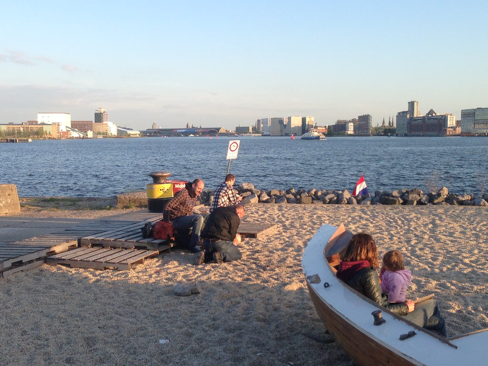

Culture
Albert cuip markt
The Albert Cuyp Market is a street market in Amsterdam, on the Albert Cuypstraat between Ferdinand Bolstraat and Van Woustraat, in the De Pijp area of the Oud-Zuid district of the city. The street and market are named after Albert Cuyp, a painter from the 17th century.
The product selection at the market varies from the traditional range of vegetables, fruit and fish to clothing and even cameras. The main reason to visit this market is for the dutch food. Try some dutch pancakes called 'poffertjes', a freshly made stroopwafel, delicious herring and don't forget their traditional deep fried fish 'kibbeling'. The Netherlands is also well known for the high quality cheese so don't hesitate to try some at the many cheese stalls!
Leidseplein
The Leidseplein is one of the busiest centres for nightlife in the city. Historically, the square was the end of the road from Leiden, and served as a parking lot for horse-drawn traffic. Today, modern traffic travels through the square and side streets are packed with restaurants and nightclubs. The Stadsschouwburg, a theater, is the most notable architectural landmark on the square, and the American Hotel is close by.
Besides the nightlife and beautifull architecture there are beautifull terraces where you can sit down, enjoy a drink and relax while enjoying all the people around you. It doesn't matter if you visit Amsterdam to party or to enjoy her architecture, Leidseplein is either way the place to go.

NDSM Warf
'NDSM' is a neighborhood in the north part of Amsterdam using the industrial structures on the former land of the Nederlandsche Dok en Scheepsbouw Maatschappij (NDSM) shipbuilding company at the IJ river. It is an "edgy arts community with a post-apocalyptic vibe" according to Lonely Planet. There are apartments, headquarters of companies like Red Bull and MTV, nightlife venues and hotels, including one built in a crane and one on a boat, the BOTEL.
The warf is a very popular festival location and therefore advisable to look on internet if there are any events when you are there. But even when there is no festival, you can always visit a place called Pllek where you can sit on a beach with a beautifull sight over the IJ river while enjoying a beverage and some food.
Canal tours
Amsterdam has more than one hundred kilometers of canals, about 90 islands and 1,500 bridges. The three main canals (Herengracht, Prinsengracht and Keizersgracht), dug in the 17th century during the Dutch Golden Age. Therefore taking a tour on a boat lets you relax while seeing almost everything the city offers.
When you arrive at central station you will find several companies who offer canal tours throught the city. Be aware that you cannot just leave the boat while on the tour and it will take a couple of hours. The average price for one person is around €15,-.